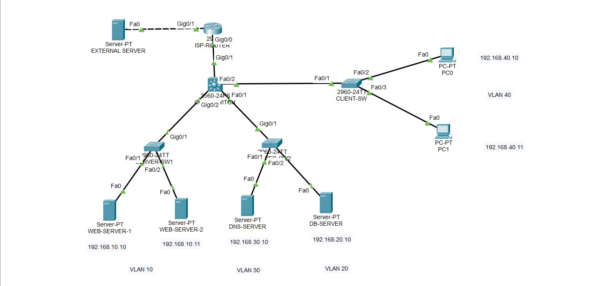

This project demonstrates the design of an enterprise data center network that hosts multiple internal services including web servers, database servers, and DNS infrastructure. The architecture uses VLAN segmentation and switching infrastructure to separate services and ensure efficient network traffic management.

The network architecture represents a simplified enterprise data center environment where different services are deployed across multiple servers. The infrastructure is organized using switching layers that connect servers, client devices, and external networks.
A core switch acts as the central communication point between multiple server switches and client networks. This structure allows servers to communicate with internal users while maintaining controlled traffic flow between network segments.
The data center hosts several critical services including web servers, database servers, and a DNS server. Web servers provide application and website hosting, the database server stores application data, and the DNS server handles domain name resolution within the network.
Network segmentation is implemented using VLANs to separate different services into dedicated network segments. For example, web servers, database services, and client devices are placed in different VLANs to improve security and reduce broadcast traffic.
External connectivity is provided through an ISP router, allowing internal services to communicate with external systems. This simulates how enterprise data centers provide hosted services to users outside the internal network.
Virtual LANs separate different services such as web servers, database systems, and client networks to improve security and network efficiency.
Layer 3 switching enables routing between VLANs and allows different network segments to communicate when required.
Multiple web servers host web applications and services that can be accessed by client devices inside the network.
The DNS server provides name resolution services allowing devices to locate web servers and other services using domain names.
The database server stores application data and supports backend services used by web applications.
Multiple switches provide network connectivity between servers, routers, and client devices within the data center.